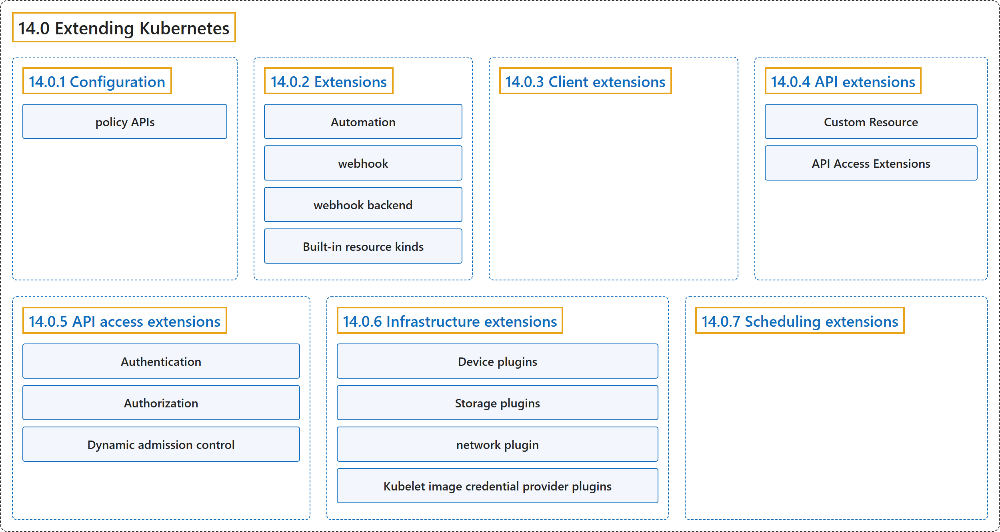

14.0 Extending Kubernetes
Classification

Glossary
| Term | Definition | 中文翻译 | Source |
|---|---|---|---|
| 14.0 Extending Kubernetes 扩展 Kubernetes |
"Different ways to change the behavior of your Kubernetes cluster." | 不同方式，用来改变 Kubernetes 集群的行为。 | The Kubernetes Authors, n.d., "Extending Kubernetes", para. 1 |
| 14.0.1 Configuration 配置 |
(context) "Configuration files and command arguments are documented in the Reference section of the online documentation" | （语境）配置文件和命令参数 记载在在线文档的参考部分 | The Kubernetes Authors, n.d., "Configuration", para. 1 |
| policy APIs 策略 API |
(context) "Built-in policy APIs, such as ResourceQuota, NetworkPolicy and Role-based Access Control" | （语境）内置的策略 API，例如 ResourceQuota、NetworkPolicy 和基于角色的访问控制 | The Kubernetes Authors, n.d., "Configuration", para. 8 |
| 14.0.2 Extensions 扩展 |
"Extensions are software components that extend and deeply integrate with Kubernetes." | 扩展是一类软件组件，它们扩展 Kubernetes 并与之深度集成。 | The Kubernetes Authors, n.d., "Extensions", para. 1 |
| Automation 自动化 |
"Automation can run on the cluster or off it." | 自动化 可以在集群内运行，也可以在集群外运行。 | The Kubernetes Authors, n.d., "Extension patterns", para. 1 |
| webhook Webhook |
"When Kubernetes is the client and calls out to a remote service, Kubernetes calls this a webhook." | 当 Kubernetes 作为客户端并调用远程服务时，Kubernetes 把这称为 Webhook。 | The Kubernetes Authors, n.d., "Extension patterns", para. 3 |
| webhook backend Webhook 后端 |
"The remote service is called a webhook backend." | 该远程服务被称为 Webhook 后端。 | The Kubernetes Authors, n.d., "Extension patterns", para. 3 |
| Built-in resource kinds 内置资源类型 |
"Built-in resource kinds, such as pods, are defined by the Kubernetes project and can't be changed." |
内置资源类型（例如 pods）由 Kubernetes 项目定义，不能更改。 |
The Kubernetes Authors, n.d., "Key to the figure", para. 3 |
| 14.0.3 Client extensions 客户端扩展 |
"Plugins for kubectl are separate binaries that add or replace the behavior of specific subcommands." | kubectl 插件是独立的二进制文件，用来添加或替换特定子命令的行为。 | The Kubernetes Authors, n.d., "Client extensions", para. 1 |
| 14.0.4 API extensions API 扩展 |
(No definition) | （无定义） | The Kubernetes Authors, n.d., "API extensions" |
| Custom Resource 自定义资源 |
(context) "Consider adding a Custom Resource to Kubernetes if you want to define new controllers, application configuration objects or other declarative APIs" | （语境）可以考虑向 Kubernetes 添加自定义资源，前提是你想定义新的控制器、应用配置对象或其他声明式 API | The Kubernetes Authors, n.d., "Custom resource definitions", para. 1 |
| API Access Extensions API 访问扩展 |
(context) "Adding an API does not directly let you affect the behavior of existing APIs (such as Pods), whereas API Access Extensions do." | （语境）添加 API 并不能直接影响现有 API 的行为（例如 Pod），而 API 访问扩展可以。 | The Kubernetes Authors, n.d., "Changing built-in resources", para. 1 |
| 14.0.5 API access extensions API 访问扩展 |
"When a request reaches the Kubernetes API Server, it is first authenticated, then authorized, and is then subject to various types of admission control" | 请求到达 Kubernetes API 服务器后，先被认证，再被 鉴权，然后接受各种准入控制 | The Kubernetes Authors, n.d., "API access extensions", para. 1 |
| Authentication 认证 |
"Authentication maps headers or certificates in all requests to a username for the client making the request." | 认证把每个请求中的请求头或证书映射为发出请求的客户端的用户名。 | The Kubernetes Authors, n.d., "Authentication", para. 1 |
| Authorization 鉴权 |
"Authorization determines whether specific users can read, write, and do other operations on API resources." | 鉴权决定特定用户能否对 API 资源进行读、写及其他操作。 | The Kubernetes Authors, n.d., "Authorization", para. 1 |
| Dynamic admission control 动态准入控制 |
(context) "After a request is authorized, if it is a write operation, it also goes through Admission Control steps." | （语境）请求通过鉴权之后，如果是写操作，还要经过准入控制步骤。 | The Kubernetes Authors, n.d., "Dynamic admission control", para. 1 |
| 14.0.6 Infrastructure extensions 基础设施扩展 |
(No definition) | （无定义） | The Kubernetes Authors, n.d., "Infrastructure extensions" |
| Device plugins 设备插件 |
"Device plugins allow a node to discover new Node resources (in addition to the builtin ones like cpu and memory)" | 设备插件 让节点发现新的节点资源（除了 cpu 和内存等内置资源之外） | The Kubernetes Authors, n.d., "Device plugins", para. 1 |
| Storage plugins 存储插件 |
"Container Storage Interface (CSI) plugins provide a way to extend Kubernetes with supports for new kinds of volumes." | 容器存储接口插件（CSI）提供一种方式来扩展 Kubernetes 以支持新的卷类型。 | The Kubernetes Authors, n.d., "Storage plugins", para. 1 |
| network plugin 网络插件 |
"Your Kubernetes cluster needs a network plugin in order to have a working Pod network and to support other aspects of the Kubernetes network model." | 你的 Kubernetes 集群需要一个 网络插件，才能拥有可用的 Pod 网络并支持 Kubernetes 网络模型的其他方面。 | The Kubernetes Authors, n.d., "Network plugins", para. 1 |
| Kubelet image credential provider plugins kubelet 镜像凭据提供程序插件 |
"The plugins can communicate with external services or use local files to obtain credentials." | 这些插件可以与外部服务通信，或使用本地文件，来获取凭据。 | The Kubernetes Authors, n.d., "Kubelet image credential provider plugins", para. 1 |
| 14.0.7 Scheduling extensions 调度扩展 |
"The scheduler is a special type of controller that watches pods, and assigns pods to nodes." | 调度器是一种特殊的控制器，它监视 Pod 并把 Pod 分配给节点。 | The Kubernetes Authors, n.d., "Scheduling extensions", para. 1 |
References
The Kubernetes Authors. (n.d.). Extending Kubernetes. Kubernetes Documentation. Retrieved October 31, 2026, from https://kubernetes.io/docs/concepts/extend-kubernetes/